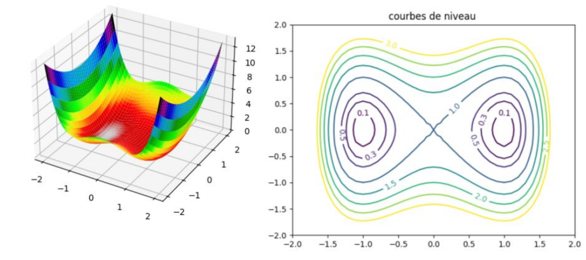

Compétence 4 : Gérer les données de l'information
Cette compétence porte sur la conception, l’optimisation et la sécurisation des modèles de données d’entreprise, ainsi que sur la maîtrise de la restitution et de la manipulation de données hétérogènes. Elle vise à garantir l’intégrité, la confidentialité et la disponibilité de l’information tout en facilitant son exploitation efficace.
AC 1 : Optimiser les modèles de données de l’entreprise
Acquis
L'optimisation des données consiste entre autre à assurer la rapidité de réponse de la base de données tout en ayant une base de données sans redondance.
Pour ce faire nous avons eu l'occasion de créer des index lors des travaux dirigés de Base de Données, ces derniers permettent d'optimiser le temps d'exécution des requêtes sur les bases de données.
Nous avons également étudié la normalisation des bases de données ce qui permet entre autre l'organisation de données de sorte à éviter la redondance tout en garantissant l'intégrité des données.
AC 2 : Assurer la confidentialité des données : intégrité et sécurité
Acquis
La confidentialité des données s'est en majeure partie faite au travers des TD et projets web dans lesquels il s'agissait de stocker les mots de passe utilisateur hachés. L'utilisation de requêtes préparées au sein du projet web a permi de sécuriser les données saisies par les utilisateurs afin d'éviter les attaques.
Un défi présent dans CTFd mettait également en avant l'utilisation d'injections SQL afin d'infiltrer une base de données, ce défi était destiné à montrer les dangers des requêtes non préparées.
Capture d'écran d'une fonction de création d'utilisateur avec un hachage de mot de passe.

AC 3 : Organiser la restitution de données via la programmation et la visualisation
Acquis
Nous avons pu programmer et visualiser des données lors de cours de méthodes d'optimisation, nous avons pu observer l'algorithme de descente de gradient à l'aide d'un affichage sur pyplot en python.

AC 4 : Manipuler des données hétérogènes
En cours
Nous avons pu manipuler des données variées lors du projet CTFd, notamment avec les divers défis créés lors du projet ou encore lors de la création de plugins.